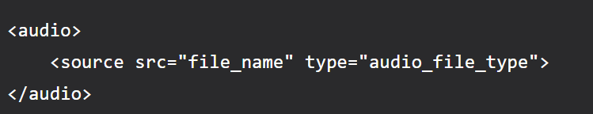

As we know that HTML5 is a new version of HTML ( Hypertext markup language). HTML5 introduced many new tags that will benefit many developers. These tags are generally supported by all major browsers. These tags belong to many aspects such as graphics, media, and forms.
<article> tag: The article tag is one of the new sectioning element in HTML5. The HTML article tag is used to represent an article. More especifically, the content within the tag is independent of the other content of the site (even though it can be related).
<aside> tag: The aside tag is used to describe the main object of the web page in a shorter way like a highlighter. It basically identifies the content that is related to the primary content of the web page but does not constitute the main intent of the primary page. The aside tag contains mainly author information, links, related content, and so on.
<audio> tag: The <audio> tag is used to insert an audio into an HTML webpage.
<canvas> tag: The <canvas>z tag in HTML is used to draw graphics on a web page using JavaScript. It can be used to draw paths, boxes, texts, gradients, and add images. By default, it does not contain borders and text.
and there are so many new tags which are included in HTML5
To embed audio in HTML, we use the
Semantic Elements: Semantic elements have meaningful names which tell about the type of content. For example header, footer, table, … etc. HTML5 introduces many semantic elements as mentioned below which make the code easier to write and understand for the developer as well as instruct the browser on how to treat them.
SVG: The Scalable Vector Graphics (SVG) is an XML-based image format that is used to define two-dimensional vector-based graphics for the web. Unlike raster image (Ex .jpg, .gif, .png, etc.), a vector image can be scaled up or down to any extent without losing the image quality.
Canvas: The HTML element is used to draw graphics on the fly, via scripting (usually JavaScript). The element is only a container for graphics. You must use a script to actually draw the graphics. Canvas has several methods for drawing paths, boxes, circles, text, and adding images.